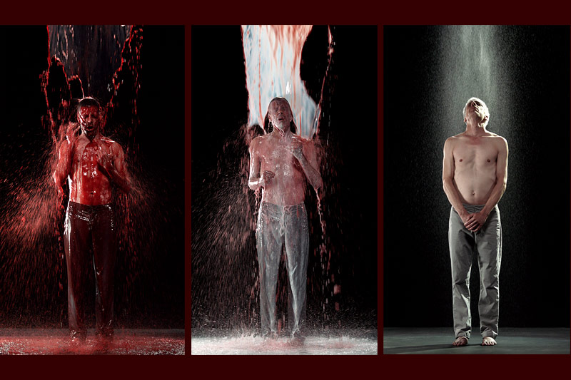
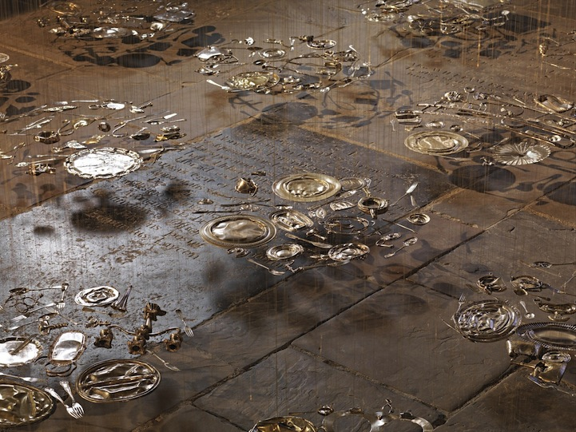
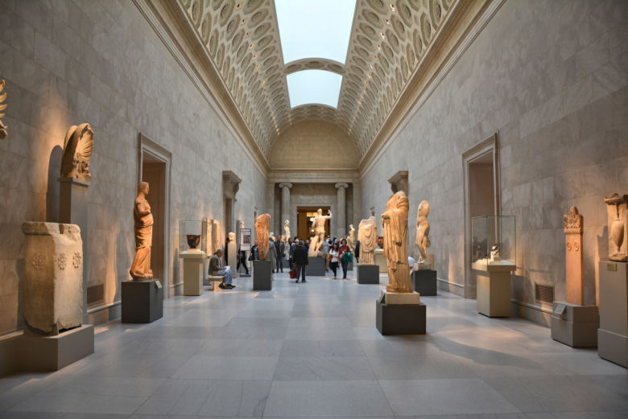
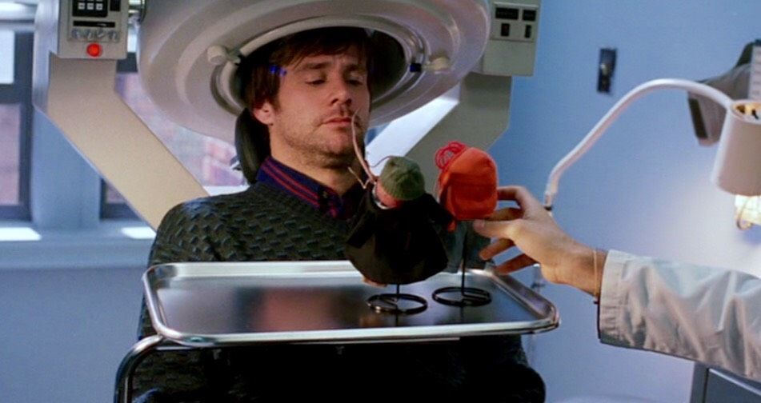
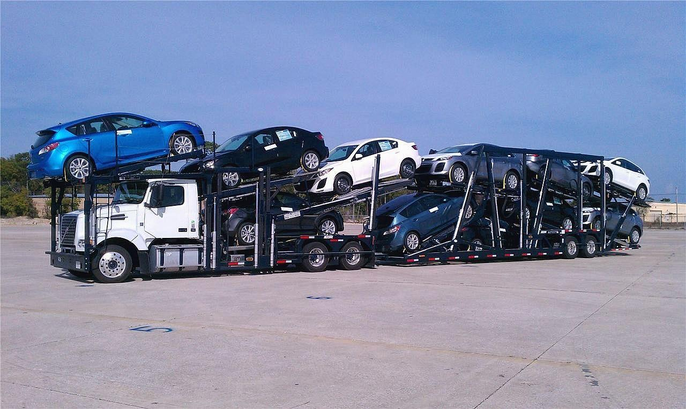
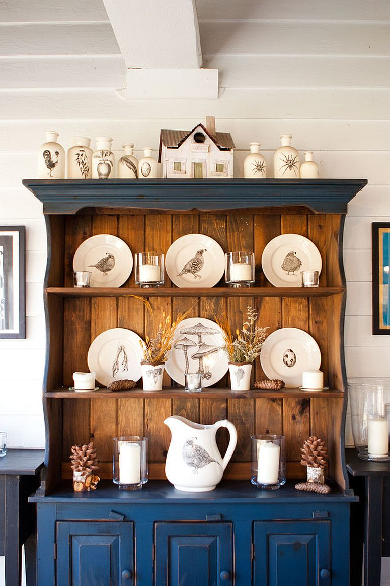

10.04 Research Questions Refinement
We begin this week's research questions with a reassessment of our goals and broader questions. To assist with my own thoughts, I created several new "buckets" for myself to drop content in.
Associations is one of these new buckets I'm drawing water from. These items serve as general influences to the larger questions. Within this list, I've included -
- Relics
- Dementia
- Tabula Rasa
- Religion
- Memento
- Clutter
- Places
- Lore
- Nostalgia
- Object Permanence
- iCloud
- Favorite Photos
In addition, I've created a set of guiding questions and responses.
- What do I intend for users to experience?
Surprise, curiosity, discovery, loss, gain, resolution, impermanence
- How do I intend for users to experience?
Introspection, obsevation, interaction, communication through senses, remembering, transformation
By revisting goals and broader associations, it allowed me to direct the research questions presented last week in a more unified manner. While the number of questions haven't really changed,
the nature of each hints at a collective topic that's ready to be explored. These common elements, that of memories, objects, and meaning casts a wide, but focused net.
- How can you share an emotion without the use of senses?
- How can we communicate with someone or something that doesn't exist?
- How can we let go of memories we no longer need?
- How do we instill value into something foreign to us?
- How can an object decide which memories have meaning to them?
The approach to these questions is through the interaction between a person and an object. It can begin from a point of mutual benefit, the object needing the human as much as the human
needs it. Or it can start from a point of no connection, neither having interfaced with the other.
References
The Trial, Bill Viola 2015
"A young woman and a young man are showered with a thick black liquid, which gradually turns into aggressive red and is washed away by pure, milky white which finally becomes crystal
clear water. It represents, in Viola’s own words, 'five stages of awakening through a series of violent transformations.'” (1Granary)
Bill Viola's works oftens transforms humans in a manner we only reserve for objects. His works are meaningful sources to study to understand empathy, meaning, and associations.
30 Pieces of Silver, Cornelia Parker 1988-89
Cornelia Parker's work involves transforming ordinary objects through extraordinary means. In doing so, the objects attains new meaning.
Mona Lisa, Leonardo Da Vinci 1503 & The Papal Ring

The Mona Lisa, along with the Papal Ring, are objects that don't belong to us, yet they still have immense value. A lot of places and objects in the world fall into this category - we have no association, yet it's meaningful. Religious relics, monuments, cities, and storied memorobilia.
The Metropolitan Museum of Art
Objects here are gathered from around the world, from private collections to acquired pieces. Much of what we see has no value or meaning to us, but at some point, was perhaps crucial to someone's identity.
Eternal Sunshine of the Spotless Mind 2004
The sequence of events leading up to the "erasure" of Clementine involved collecting items in Joel's belongings that can be associated with her. These objects are presented back to Joel, as neural maps attributed to each object are mapped, and subsequently erased.
Means of Moving Objects
Depending on the sentimentality of the objects being moved, objects are moved both preciously and precariously.
Means of Storing Objects
Similar to how objects are transported, whether the object has any meaning to us or not, they are either presented, stored, or disposed. Rarely do we see objects transfer in the reverse from disposed to presented.
Types of Objects
The samples shown above highlight the different lives of objects. Not all objects are created equally, and not all objects are received equally. Objects follow a strange trajectory of worth
and meaning that can change at any one moment. A poster in an apartment building would hardly have any greater value than the one it bestows upon its owner, but if we assume a tragic fire that
consumes the entire block and this poster miraculously survives? Perhaps the existence of this poster might take on a diferent meaning.
**** Still pondering **** Objects can be categorized into three types - Collective objects, Personal objects, Unwanted objects.
Method Cards
We can utilize IDEO's Method Cards as a means to understand from a human's perspective, as well as from an object's perspective. I've identified several suitable methods for this
exercise. They are largely centered around two categories - familiar objects and unfamiliar obejects. By looking at familiar objects, we're able to examine recollections and establish a
baseline value. On the other hand, by looking at unfamiliar objects, we can examine whether someone adopts this object into their life.
-- Familiar Objects --
Personal Inventory - Have people show what's important to them. It can be through their phone in the form of photos, it can be on them, it can be in their pockets, it can be in their bags.
Unfocus Group - Assemble a group of individuals who don't know one another too well and have objects from shared childhoods. Candy, toys, books. Ask them to talk about those objects to others.
Observe what they think about the objects and if there are any shared connections.
Five Whys - Perform an analysis on why an item is important to someone or has sentimental value. Through the analysis, evaluate whether the item has a new meaning attributed to it.
Conceptual Landscape - Have a user describe their prized possessions. Have them sketch out where these positions currently exist within their living spaces. Then, have them sketch out
idealized places (if they have any in mind) for their possessions.
Still Photo Survey - Take pictures of hands and how people hold their possessions. Determine whether or not something is of value through this survey.
-- Unfamiliar Objects --
Guided Tours - Tour of the Met or an archive and have an archivist walk through their favorite pieces
Affinity Diagrams - Ask individuals to describe objects. Provide pre-picked adjectives, but also paper for more specific descriptions.
Collage - Print out random (or pre-selected) photos and have users arrange them and make relationships between them.
Cross Cultural Comparisons - Understand how meanings of items and places can vary between cultures. Create profiles for objects unique to certain cultures.